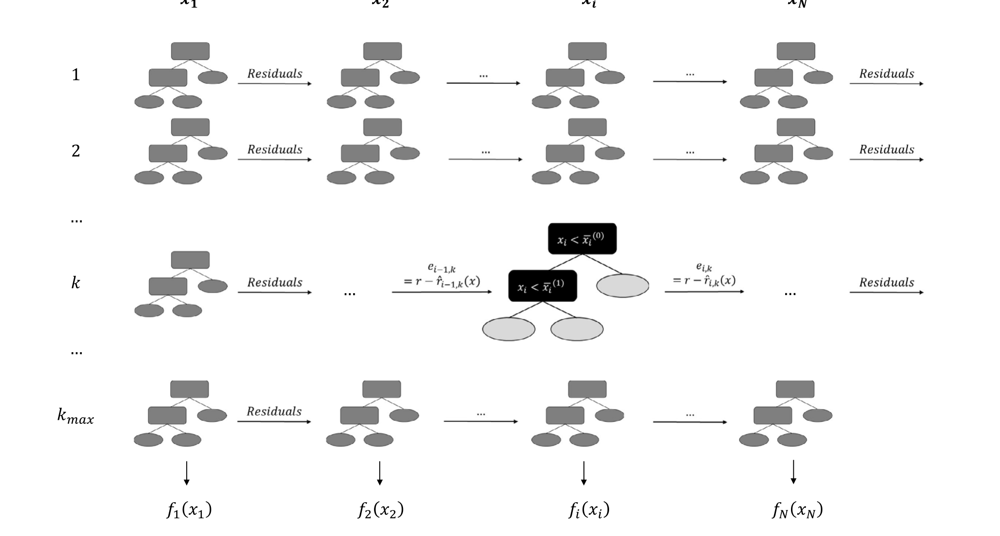
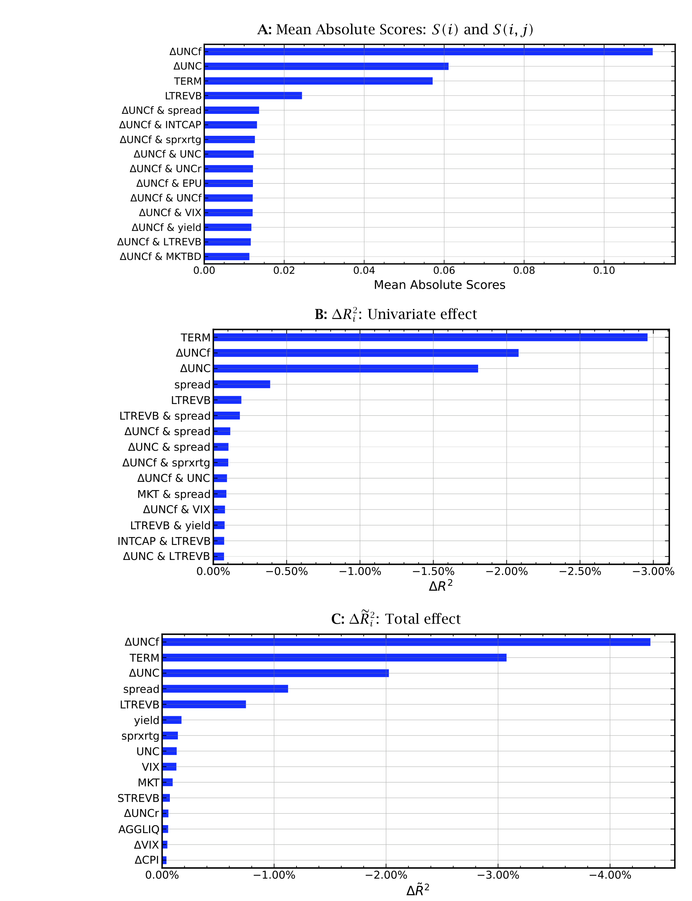
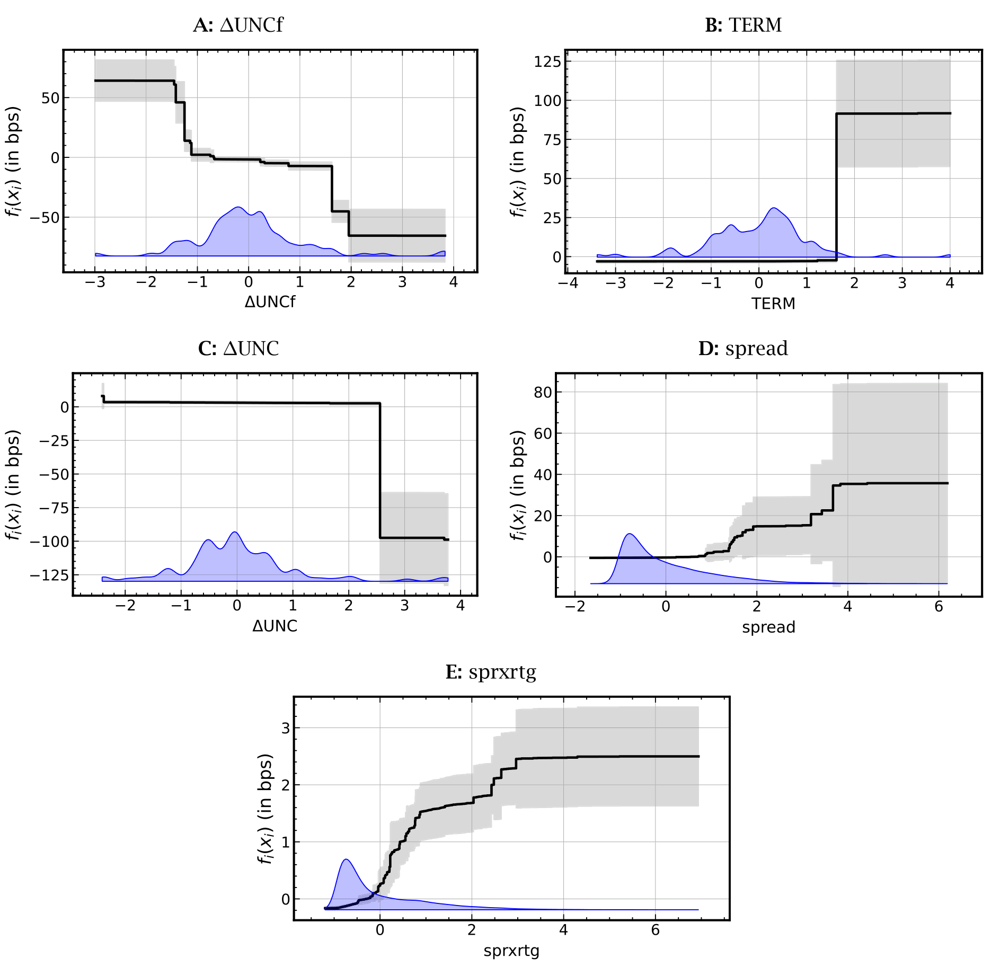
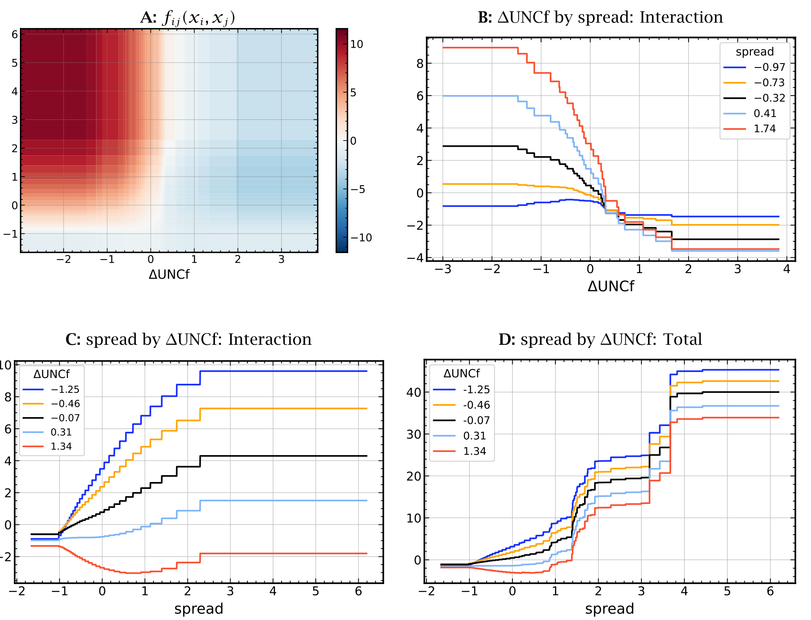
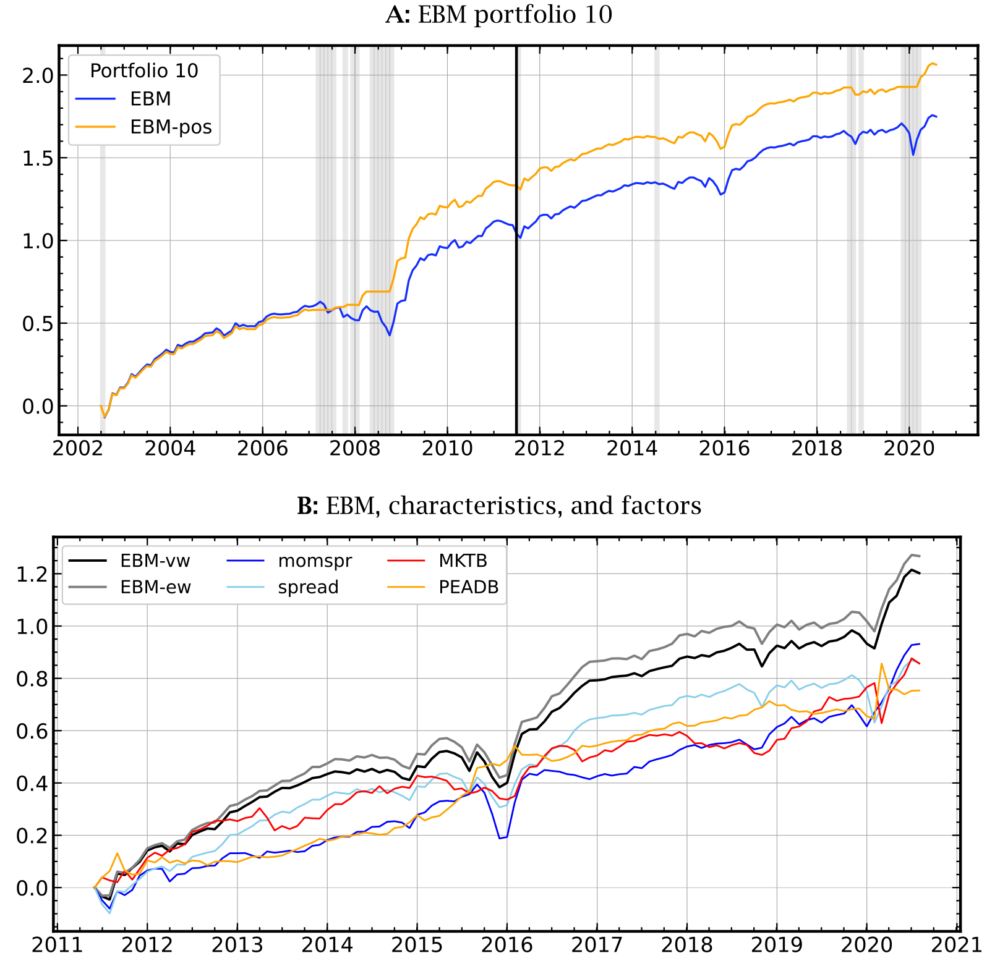
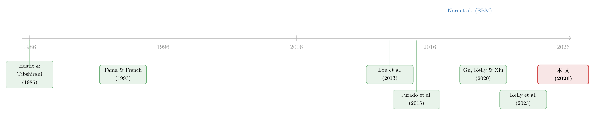

把机器学习的黑箱拆成玻璃箱：公司债收益率能被「看懂」地预测吗？
本文读的是 Bell, Kakhbod, Lettau & Nazemi (2026, Journal of Financial Economics)：作者用一类「玻璃箱」机器学习模型——可解释提升机 (Explainable Boosting Machine, EBM)——预测公司债收益率，在不牺牲解释力的前提下把样本外 R² 做到 12% 以上，与随机森林、XGBoost 这些黑箱旗鼓相当，却能把「哪个变量、以什么形状、在什么区间、和谁交互」一条条画给你看。核心发现：宏观与金融不确定性、期限结构因子是最重要的预测变量，且它们对收益的影响高度非线性、不对称，并集中体现在小公司、长久期、高风险的债券上。
1 引言：一个让人左右为难的取舍
做实证资产定价的人，这些年大概都被同一个矛盾反复折磨过。
一方面，因子动物园 (factor zoo) 越来越大。股票市场的因子早已数以百计，公司债市场也不甘示弱——Dickerson et al. (2023a) 干脆给它起名叫「公司债因子动物园」。面对几十上百个候选预测变量，线性回归早就力不从心：它既处理不了变量之间复杂的非线性，也容纳不了高维的预测集。于是机器学习登场了。Gu et al. (2020) 在股票上证明，允许非线性与变量交互的机器学习模型，能给投资者带来实打实的经济收益，远超传统统计方法。
但另一方面，代价也随之而来：这些模型是黑箱。 神经网络也好，梯度提升树也好，把多个学习系统层层堆叠、相互集成，预测是准了，可你根本说不清某一个输入变量究竟是怎样、在哪个区间、朝哪个方向影响了最终的预测。Gu et al. (2020) 自己也观察到了非线性和交互效应的存在——但他们只能「看到」，无法「解释」。
于是问题就摆在这里：我们能不能既要准确，又要看得懂？ 长期以来，学界默认这是一个此消彼长的取舍——想要解释力，就退回到线性回归或单棵决策树；想要预测精度，就只能拥抱黑箱。准确性与可解释性，似乎不可兼得。
这篇论文的全部张力，就压在这个取舍上。而它给出的答案是：这个取舍，其实是可以被绕过去的。
2 玻璃箱：让模型自己把话说清楚
作者的武器，叫可解释提升机 (Explainable Boosting Machine, EBM)。它不是事后给黑箱「打补丁」式地强行解释（比如 SHAP 那种基于 Shapley 值的事后归因），而是一类结构上天生可解释的模型——所谓「玻璃箱 (glass box)」：你不必凿开它，因为它本来就是透明的。
它的底子是广义可加模型 (Generalized Additive Model, GAM)，由 Hastie and Tibshirani (1986) 提出。GAM 的思想朴素得近乎优雅：与其让所有变量在一个高维函数里搅成一团，不如让每个变量各自贡献一条非线性的「形状函数」(shape function)，再把它们加起来。Lou et al. (2013) 又向前推了一步，允许加入选定变量对的交互项。于是模型长成了这个样子：
$$r_{l,t+1}=\beta+\sum_{i=1}^{N} f_i(x_{i,l,t})+\sum_{i>j} f_{ij}(x_{i,l,t},x_{j,l,t})+e_{l,t+1}$$
这里 \(r_{l,t+1}\) 是公司 \(l\) 在 \(t+1\) 期的超额债券收益，\(x_{i,l,t}\) 是第 \(i\) 个特征。\(f_i\) 是单变量形状函数，\(f_{ij}\) 是一阶交互的二元形状函数。它们刻画了每个变量（和每对变量）对收益的影响形状。
这个加性结构是整篇文章的灵魂。让我们把这一个最核心的方程拆开看清楚：
为什么这个结构是「可解释」的关键？因为它是可分离 (separable) 的：既然预测值是各项之和，那么任何一个变量的影响，就直接等于它那条 \(f_i\) 曲线，不受其他变量取值的牵连。你想知道收益率随某个变量怎么变？把那条曲线画出来看就行了——这正是黑箱永远给不了你的东西。
那么问题来了：GAM 这么老，为什么过去没人这么干？因为传统估计方法（回填、极大似然）撑不起几十个变量、还带交互的大模型。真正关键的一步，是 Nori et al. (2019) 提出的 EBM：它借用了机器学习的工具——决策树、bagging（自助聚合，降方差）、boosting（梯度提升，逐步纠错）——来估计这些 \(f_i\) 和 \(f_{ij}\)。
具体怎么估？算法先把每个 \(f_i\) 写成分箱上的阶梯函数，用一棵棵浅决策树去拟合。每轮迭代里，算法依次轮转所有单变量，对每个变量拟合一棵小树、更新残差，循环成千上万次，直到验证集表现不再提升（早停）。单变量拟合完，再用一套高效方法挑出最能改善拟合的变量对，估计交互项 \(f_{ij}\)。每个 \(f_i\) 的标准误，则由 bagging 的自助样本算出。图 1 给出了这个核心算法的示意。

Figure 1: EBM algorithm
于是，机器学习的精度被请了进来，GAM 的透明却被原封不动地保留了下来。这就是「玻璃箱」三个字的全部含义。
这里有个容易被忽略的细节：作者评价模型用的 R²（式 3）分母里不做去均值——即 \(R^2=1-\sum e_{l,t}^2 / \sum r_{l,t+1}^2\)。这等于把模型和「预测未来超额收益恒为零」这个朴素基准去比，跟随 Gu et al. (2020) 与 Kelly et al. (2023) 的做法，避免拿一个糟糕的均值基准把模型表现吹高。所以这里的 12% 已经是个相当扎实的数字。
3 数据：一套拼起来的高维公司债面板
讲完方法，自然要问：拿什么数据喂它？
作者的债券收益与特征，来自 Kelly et al. (2023) 基于 TRACE（经 WRDS）构建的久期调整月度债券收益。在此之上，他们把债券与公司层面的特征、各种风险因子、以及来自债市和股市的宏观变量拼到一起，凑成一套全新的高维数据集，一共 81 个预测变量。
- 观测单位：公司–月（firm-date）。
- 样本期：2002 年 7 月至 2020 年 8 月，共
218个月。 - 样本量：
1,207家公司，合计106,265个公司–月观测。 - 画像：所有公司债的中位评级为
BBB-（按市值加权后接近A，因为评级与公司规模正相关）；约56%是投资级；所有债券的中位久期为5.6年，且在样本后半段显著拉长——90% 分位的久期从 9 年几乎翻倍到 16 年，意味着后期有些公司开始发行超长久期的债。
特征在喂进模型前都做了标准化（零均值、单位标准差），在零处截断的变量取自然对数。值得一提的是，宏观不确定性这类变量的构造，作者严格沿用 Jurado et al. (2015) 与 Ludvigson et al. (2021) 的设定——用一组经济指标中不可预测成分的条件波动率聚合成单一指标，确保只用 \(t\) 时刻可得的信息，不偷看未来。
4 主要结果：准确，而且终于看得懂了
4.1 准确性：玻璃箱不输黑箱
先看那个最关键的悬念有没有兑现。
答案是肯定的。EBM 的样本外 R² 超过 12%，显著优于 OLS 和 LASSO 这些线性模型，而与随机森林 (Random Forests)、XGBoost 这些最先进的黑箱旗鼓相当。换句话说，可解释性这一次没有用精度去换。准确性与可解释性的取舍，被绕过去了。

Figure 2: Importance of predictors
但真正让这篇文章有价值的，不是这个 12%，而是接下来这件黑箱永远做不到的事：把每个变量的影响画出来。
4.2 谁最重要：不确定性与期限结构
按对样本外拟合的贡献（作者用「去掉某变量后 R² 的下降」来度量重要性，见式 6–8），最重要的预测变量是：
- 宏观经济不确定性（Jurado et al., 2015）与金融不确定性（Ludvigson et al., 2021）；
- 期限结构因子（Fama and French, 1993，即长期国债与短期国库券的收益差）；
- 紧随其后的是公司层面的收益率利差 (yield spread)。
不确定性因子排在最前面，这本身就是一个值得玩味的结果——它把宏观时间序列的风险，直接顶到了公司债横截面定价的中心。
4.3 形状才是故事：非线性与不对称
更精彩的，是这些变量影响收益的形状。这正是线性回归一直在假设、却从未验证过的地方。

Figure 4: Univariate functions 𝑓(𝑥)
- 期限结构因子：当它取大的正值（长债收益大幅跑赢短债）时，预示公司债收益上升约 100 个基点 (basis points)。但关键在于——这个效应只存在于因子分布的右尾，对应的左尾大负值并没有带来对称的收益下降。这是一种对利率变动风险的不对称反应。
- 宏观不确定性的变化：与收益负相关，但形状是个阶梯函数 (step function)，主要冲击集中在分布右尾。也就是说，市场对不确定性上升的反应，远强于对它下降的反应——又一处不对称。
- 金融不确定性：通过一条单调递减的函数影响收益，其最高值与最低值之间的收益差，高达近
130个基点。
如果你只跑线性回归，这三种形状你一种也看不到——你会把右尾才有的效应，错误地摊平到整条分布上。
4.4 交互：风险最高的债，对不确定性最敏感
加性结构还允许作者读出交互项。其中最重要的一对，是金融不确定性的变化 (\(\Delta\text{UNC}^f\)) 与债券利差 (spread) 的交互。

Figure 5: Interactions — 𝛥UNCf & spread
如图 5 所示：当金融不确定性下降时，这个交互项给高利差债券带来一笔额外的收益溢价——本质上是最高风险债券在不确定性消退时的价格大幅修复；而当金融不确定性上升时，带来的收益下降在绝对值上更小，且在各利差水平上分布得更均匀。对低利差的债券，这个交互项几乎与金融不确定性无关。
同样的模式也出现在金融不确定性与「利差×评级」(spread-times-rating) 的交互上：不确定性下降时，过去六个月高利差的低评级债券收益涨得格外多。
4.5 异质性：小公司、长久期最敏感
把样本按特征切成子样本后，作者发现这些效应并非人人均等。小公司的债、长久期的债，对金融不确定性变化的敏感度，明显高于大公司和短久期的债；高利差、低评级这些更高风险的债券，反应也更强。模型识别出的不对称差异，在不确定性大幅上升时最为显著。
这是一幅相当符合经济直觉的图景：当不确定性来袭，最脆弱的那批债券首当其冲；而当阴霾散去，也正是它们价格修复最猛。玻璃箱不仅告诉你「有这回事」，还告诉你「在谁身上、什么时候、有多强」。
5 从看得懂到用得上：透明的组合构建
预测准、看得懂，最后还得问一句：有什么用？
作者据此构建了一个月度的多空组合 (long–short portfolio)，其夏普比率 (Sharpe ratio) 高于多个基准组合。但这不是重点——重点是，因为模型透明，作者能在事前就知道这个组合大概会买什么、卖什么。 通过分析哪些特征和交互对样本外拟合及组合夏普比率贡献最大，他们事先就能形成对多头腿、空头腿特征的预期（主要由债券利差、收益率、以及前述与金融不确定性的交互驱动），事后也确认组合的构成确实印证了这些预期。

Figure 11: Cumulative returns
换句话说，黑箱给你一个组合，你只能事后归因、将信将疑；玻璃箱给你一个组合，你在按下回车之前就知道自己在押注什么。对真正要把模型放进生产流程的人来说，这种事前透明度 (ex ante insight)，往往比小数点后那点夏普比率更值钱。
6 文献脉络
把这篇论文放回它所在的坐标系，会看得更清楚。
最早，公司债定价沿着 Fama and French (1993) 的因子传统展开，规模、信用风险、价值、动量、流动性 (Lin et al., 2011)、宏观不确定性 (Bali et al., 2021b) 等被陆续记录为定价因子，最终堆成 Dickerson et al. (2023a) 笔下的「公司债因子动物园」。
接着，机器学习进场。Gu et al. (2020) 在股票上奠定范式，Bianchi et al. (2021) 把机器学习用于债券风险溢价。但它们都是黑箱——能预测，不能解释。与此同时，另一条线在用各种方式给高维因子降噪：PCA 类的潜在因子 (Lettau and Pelger, 2020)、以及把横截面「收缩」掉的正则化方法，如 Kozak et al. (2020) 的收缩估计（关于这条线，可参见《压缩横截面：因子动物园的尽头，不是更少的因子，而是更聪明的收缩》与《弱替代：因子动物园是从哪里冒出来的？》）。
然后，可解释性这条支流在机器学习内部发育成熟：Hastie and Tibshirani (1986) 的 GAM → Lou et al. (2013) 加入交互 → Nori et al. (2019) 用 boosting 把它做成可扩展的 EBM。

而这篇论文，正是把这条「可解释机器学习」的支流，第一次系统地引到「公司债收益率预测」的主河道上——用 EBM 在 Kelly et al. (2023) 的高维债券数据上，既拿到黑箱级的精度，又把每个预测变量的形状和交互都摊开给你看。它所处的位置，是两条河的交汇口。
7 评论与延伸（Q&A + 研究方向）
(a) 几个可能的疑问
Q：EBM 的「可解释」，和 SHAP 那种事后解释到底差在哪？
差在「近似」与「精确」。SHAP 等事后方法是给一个已经训练好的黑箱外挂一层归因，它给的是对真实预测过程的近似，可能不可靠（Rudin, 2019 专门论证了这点）。EBM 的可解释性来自模型结构本身——形状函数就是预测的真实组成部分，不是近似。作者在第 6、7 节专门用 Shapley 值和模拟数据做了对比，正是为了把这一点钉死。
Q：把 GAM 限定在「单变量 + 一阶交互」，会不会漏掉更高阶的非线性？
会，这是设计上的取舍。二阶以上的交互被排除在外，换来的是可解释性和可估计性。作者的辩护是：经验上，一阶交互已经能把样本外
R²推到与全黑箱相当的12%+，说明在公司债这个场景里，三阶以上交互的边际贡献有限。但这是个经验判断，不是定理。
Q：12% 的样本外 R² 听起来不高，值得这么折腾吗？
在收益预测里，月度横截面的
R²能上两位数已经很可观了——而且记住，分母没做去均值，基准是「收益恒为零」，所以这个数字比一般文献里的R²更难刷上去。更何况这篇文章卖的从来不是那个最高的R²，而是「在同样的精度下，我还能告诉你为什么」。
Q：不确定性排在最重要的预测变量，会不会只是因为样本期里有金融危机和新冠两次大冲击？
这是个真问题。样本期 2002–2020 横跨 2008 与 2020 两次剧烈的不确定性冲击，右尾的强效应很可能由这两段主导。作者用子样本和不对称性分析做了刻画，但「换一个更平静的样本期，这些形状是否还稳」，文章并未完全回答——这是识别上值得警惕的地方。
Q：这些「形状」是预测关系还是因果关系？
纯预测。整篇文章是一个收益预测练习，所有 \(f_i\) 曲线读的都是条件相关性，不是因果效应。把「金融不确定性下降 → 高利差债券价格修复」解读成因果机制，需要额外的识别设计，文章本身没有提供。
Q：宏观不确定性是时间序列变量，怎么会在横截面定价里这么重要？
关键在交互。单看不确定性是个对所有债券一视同仁的时间序列冲击，但它通过与利差、评级的交互，把时间维度的冲击「投影」到了横截面上——同一个冲击，对高风险债的影响远大于低风险债。横截面的差异，正是从这种交互里长出来的。
(b) 几个可能的研究问题与提案
1. 外资持有人与公司债不确定性敏感度
【经济故事】这篇文章发现小公司、高风险债对金融不确定性最敏感。一个自然的延伸：持有人结构会不会调节这种敏感度？外国投资者通常被认为更易在不确定性上升时撤离（flight-to-quality / home bias），那么外资持有比例高的公司债，是否对 \(\Delta\text{UNC}^f\) 的反应更剧烈？ 【可行性】中。需要把 EBM 框架里加入「外资持有比例」作为特征或子样本切分维度；数据上可用 eMAXX / Lipper 等债券持有人数据匹配 TRACE。识别仍是预测性的，但用 EBM 读出「外资持有 × 不确定性」的交互形状是直接可做的。
2. 玻璃箱模型下的流动性—不确定性交互
【经济故事】文章把利差、评级作为风险维度，但流动性 (Lin et al., 2011) 同样在不确定性冲击中放大。能否专门估计「流动性指标 × \(\Delta\text{UNC}^f\)」的二元形状函数，检验流动性枯竭是否是高风险债价格暴跌–修复的真正渠道？ 【可行性】高。流动性度量（Amihud、bid-ask、Roll）在 TRACE 上可构造，直接作为新特征喂进 EBM，读交互曲线即可。难点是流动性与利差高度相关，需小心区分两者的独立贡献。
3. EBM 形状函数的时变性
【经济故事】本文的形状函数是全样本估计的、静态的。但「期限结构因子的右尾效应」「不确定性的阶梯」是否在危机期与平静期形状不同？滚动窗口估计 \(f_i\)，观察形状本身如何随宏观状态漂移，会是对「条件定价」的一个透明刻画。 【可行性】中。技术上是滚动重估 EBM，计算量大但可行；难点在样本期只有 218 个月，滚动窗口一切，每段的估计精度会下降，结论稳健性存疑。
4. 把玻璃箱用于信用利差的事前预警
【经济故事】既然组合构成可以事前预知，那能否反过来，用 EBM 在不确定性上升的早期，事前识别出「哪一类债最可能在接下来遭遇大幅利差走阔」，做成一个透明的信用预警指标？ 【可行性】中。预测目标从收益换成「未来利差变化/违约」，框架不变；数据可得。挑战在于违约是稀有事件，类别极不平衡，EBM 在尾部事件上的可靠性需要专门验证。
8 参考文献与我的判断
贡献。 这篇文章最实在的贡献，不是又把某个 R² 刷高了零点几，而是它用一个干净的经验证据，动摇了「准确性 vs 可解释性」这个被默认了太久的取舍。它告诉做实证的人：在公司债收益预测这个具体场景里，你不必为了精度而放弃看懂模型。顺带，它还产出了一批扎实的、过去被线性假设掩盖的经验事实——不确定性效应的不对称性、期限结构的右尾效应、风险债在不确定性消退时的价格修复——这些事实本身就有独立价值。
对识别（更准确说是对解读）的担忧。 我最在意三点。其一，整篇是预测练习，所有「形状」都是条件相关，把它们读成机制要非常克制。其二，右尾的强效应很可能被 2008 与 2020 两次极端事件主导，样本期外的稳健性是个悬而未决的问题。其三，一阶交互的限定是个经验上够用、但理论上无保证的取舍——在别的资产或别的样本里，高阶交互可能没这么无关紧要。
后续想看到什么。 我最想看到的，是把这套玻璃箱搬到持有人结构和流动性的维度上去——公司债市场最迷人的地方，恰恰在于谁持有、流动性如何，会系统性地改变同一个宏观冲击在横截面上的传导。EBM 这种「能把交互形状画出来」的能力，天生就该用来回答这类问题。如果能再配上一个真正的事前预警应用，这条线就从「我能解释」走到了「我能预判」——那才是玻璃箱相对黑箱真正不可替代的地方。
参考文献
- Bali, T. G., et al. (2021b). [Macroeconomic uncertainty and corporate bond returns].
- Bell, S., Kakhbod, A., Lettau, M., & Nazemi, A. (2026). Glass box machine learning and corporate bond returns. Journal of Financial Economics 181, 104294.
- Bianchi, D., Büchner, M., & Tamoni, A. (2021). Bond risk premiums with machine learning. Review of Financial Studies 34(2), 1046–1089.
- Dickerson, A., Julliard, C., & Mueller, P. (2023a). The corporate bond factor zoo. Working paper.
- Fama, E. F., & French, K. R. (1993). Common risk factors in the returns on stocks and bonds. Journal of Financial Economics 33(1), 3–56.
- Gu, S., Kelly, B., & Xiu, D. (2020). Empirical asset pricing via machine learning. Review of Financial Studies 33(5), 2223–2273.
- Hastie, T., & Tibshirani, R. (1986). Generalized additive models. Statistical Science 1(3), 297–310.
- Jurado, K., Ludvigson, S. C., & Ng, S. (2015). Measuring uncertainty. American Economic Review 105(3), 1177–1216.
- Kelly, B., Palhares, D., & Pruitt, S. (2023). Modeling corporate bond returns. Journal of Finance 78(4), 1967–2008.
- Kozak, S., Nagel, S., & Santosh, S. (2020). Shrinking the cross-section. Journal of Financial Economics 135(2), 271–292.
- Lettau, M., & Pelger, M. (2020). Factors that fit the time series and cross-section of stock returns. Review of Financial Studies 33(5), 2274–2325.
- Lin, H., Wang, J., & Wu, C. (2011). Liquidity risk and expected corporate bond returns. Journal of Financial Economics 99(3), 628–650.
- Lou, Y., Caruana, R., Gehrke, J., & Hooker, G. (2013). Accurate intelligible models with pairwise interactions. Proceedings of the 19th ACM SIGKDD, 623–631.
- Ludvigson, S. C., Ma, S., & Ng, S. (2021). Uncertainty and business cycles: exogenous impulse or endogenous response? American Economic Journal: Macroeconomics 13(4), 369–410.
- Nori, H., et al. (2019). InterpretML: A unified framework for machine learning interpretability. Working paper.
- Rudin, C. (2019). Stop explaining black box machine learning models for high stakes decisions. Nature Machine Intelligence 1(5), 206–215.